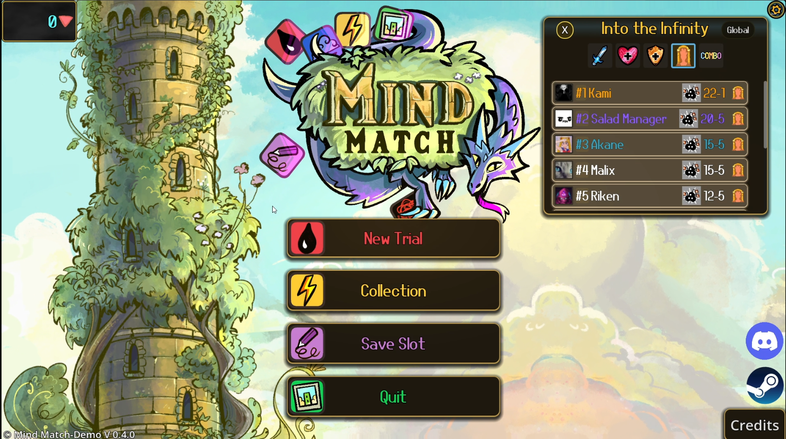
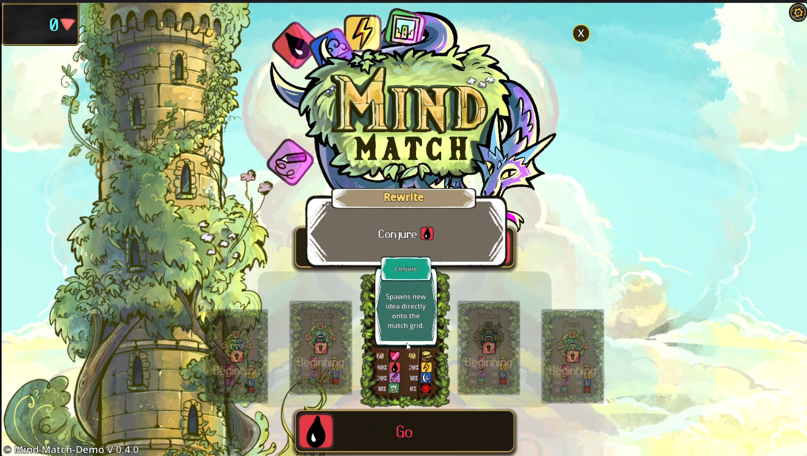
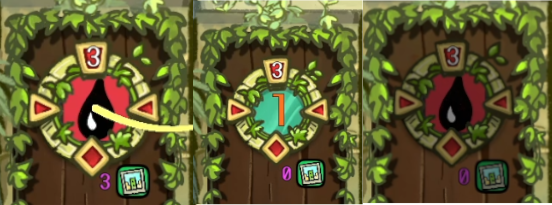
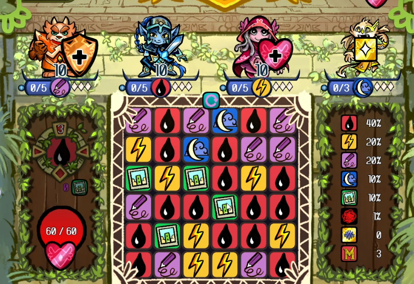
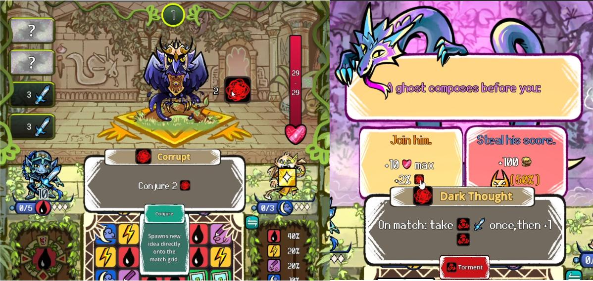
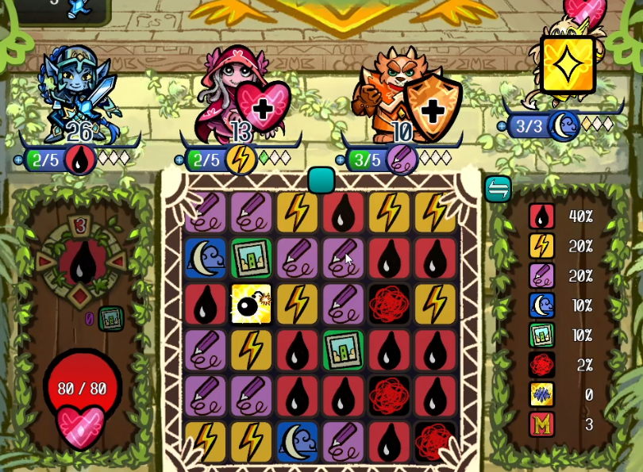

Mind Match - QA Pass (PC)
🧾 Test Overview
- Platform: PC (Windows 11)
- Focus Areas: Main menu interaction, tutorial clarity, tile outcome clarity, system feedback, terminology consistency, and decision-making during active gameplay
- Purpose: Check whether the game clearly explains what the player is doing, what changes after each action, and whether choices can be understood during normal play
Introduction
This is a focused QA pass on Mind Match, tested on PC using Demo v0.4.0.
The goal was to check whether the early experience clearly explains what the player is doing, what changes after each action, and whether choices can be understood during normal gameplay.
Testing focused on:
- Main menu interaction and first access to gameplay
- Tutorial clarity and whether instructions match what the player needs to do
- Tile matching and whether outcomes are understandable
- System feedback, including ability state changes and probability changes
- Decision-making during combat, events, and shop interactions
Findings are based on direct testing and focus on player-facing clarity rather than design preference.
| Game | Platform | Scope |
|---|---|---|
| Mind Match | PC, Demo v0.4.0 | QA mini-pass focused on main menu interaction, tutorial clarity, match outcome clarity, system feedback, terminology consistency, and decision-making under gameplay. |
🎯 Goal
Check whether the game gives enough information for a new player to understand actions, outcomes, and choices during the tutorial and early gameplay.
🧭 Focus Areas
- Main menu and first interaction
- Tutorial onboarding
- Tile and hero ability clarity
- System values and feedback
- Decision-making during active gameplay
📄 Deliverables
- QA workbook with README, charters, session notes, risk matrix, and player experience notes
- One-line findings summary for quick review
- Screenshot evidence for key player-facing findings
- Short write-up focused on clarity, feedback, and decision-making
📊 Metrics
| Metric | Value |
|---|---|
| Total Sessions Logged | 3 |
| Total Bugs Logged | 0 |
| Critical | 0 |
| High | 0 |
| Medium | 0 |
| Low | 0 |
| Player Experience Findings | 9 |
| Primary Risk Area | Early player understanding and decision-making clarity |
| Repro Rate | Findings are based on observed player-facing behaviour during tutorial and early gameplay in Demo v0.4.0 |
📷 Evidence
Supporting evidence is included to show the findings clearly and make each point easy to review.
- Screenshots showing unclear menu interaction and early access friction
- Screenshots showing unclear tutorial feedback and unexplained values
- Screenshots showing terminology inconsistency, enemy state changes, and new unexplained tile types
| Type | File / Link |
|---|---|
| QA Workbook (Google Sheets) | Open Workbook |
| QA Workbook (PDF Export) | Open PDF |
📌 Core Project Findings
| Area | Finding | Evidence |
|---|---|---|
| Main Menu Interaction | Main menu appears non-responsive due to unclear drag-based interaction, blocking access to gameplay on first attempt. |
 |
| Level Selection / Pop-up Interaction | Level hover pop-up presents an apparent “Conjure” button that does not respond to click and lacks clear purpose, causing interaction confusion before gameplay. |
 |
| Refresh Action Feedback | Refresh action displays a “+1%” change without explaining what the value represents or how it impacts gameplay. | |
| Hero Ability / State Feedback | Hero ability icon temporarily changes from the black droplet to a numeric value (“1”) and then reverts back to the droplet without explanation, making the outcome of actions difficult to interpret. |
 |
| Tile & Ability System Clarity | Not all tile types shown in gameplay and UI are explained during onboarding, resulting in partial understanding of the core loop. |
 |
| Status Effects / Terminology Consistency | Same symbol is presented with multiple names, such as Corrupt, Dark Thought, and Torment, making it difficult to recognise and understand effects during decision-making. |
 |
| Enemy Behaviour / System Interaction | Enemy state changes are not clearly linked to player actions, making cause and effect relationships difficult to understand during combat. |

|
| Relic System / Post-Decision Feedback | Relic effects are not clearly visible during gameplay, making it difficult to understand their impact after selection. | No screenshot included |
| Tile System / New Mechanic Introduction | New tile types can appear during gameplay without prior explanation, preventing players from understanding how to interact with them. |
 |
🐞 Bugs Logged
No functional bugs were logged during this mini-pass. The findings relate to player-facing clarity, feedback, and interpretation rather than broken functionality.
🧠 Player Experience Notes
| Moment | Player Expectation | Actual Experience | Friction Type | Impact | Severity |
|---|---|---|---|---|---|
| First interaction with main menu | Clicking a menu option opens that option. | Clicking produces no response; options only activate when dragging the icon across the button, which is not indicated. | Interaction clarity / affordance mismatch | Player may assume the game is unresponsive or broken and fail to start the game. | High |
| New Trial → Level selection hover pop-up | Hovering a level provides clear information, and any visible button is clickable and performs an obvious action. | Hovering a level displays a pop-up with a “Conjure” button, but clicking it produces no response. The text lacks context, making it unclear whether this is a description or an interactive element. | Interaction clarity / unclear UI purpose | Player hesitates and cannot determine whether the element is interactive or what the information represents, delaying progression into gameplay. | Medium-High |
| Tutorial → Refresh action + probability panel | Instruction clearly explains what “+1%” affects, and the player understands whether the change is beneficial or harmful. | “+1% for this fight” increases a value in the probability panel from 0% to 1%, but the purpose of that value is unclear. The player cannot determine what the percentage represents, whether the change is beneficial, or how it impacts gameplay. | Unclear system feedback / missing context | Player cannot interpret the outcome of the action, making it difficult to assess its value or make informed decisions. | Medium-High |
| Tutorial → Hero ability / state feedback | Using a tile to activate a hero ability results in a clearly explained and consistent state change. | After performing the action, the hero ability icon (black droplet) temporarily changes to a numeric value (“1”), then reverts back to the icon after subsequent moves. The meaning of the value, why it appears, and what causes it to revert are not explained. | System feedback / state clarity | Player cannot track ability state or understand how actions affect hero power, leading to confusion and guess-based gameplay. | Medium-High |
| Tutorial → Early gameplay after heroes introduced | All tile types shown in the grid and UI are introduced and explained. | The tutorial introduces four heroes and their associated symbols, but additional tile types and symbols appear in the grid and probability panel without explanation. | Incomplete onboarding / unclear mechanics | Player forms only a partial understanding of the system, reducing their ability to make informed decisions and engage with intended mechanics. | High |
| Event choice screen → status effects | Symbols and status effects use consistent naming and meaning across gameplay. | The same symbol appears during combat as “Corrupt,” but is later described as “Dark Thought” and “Torment” in an event screen. | Inconsistent terminology / unclear system relationships | Player cannot reliably interpret status effects or make informed decisions during events, as previously seen symbols do not map consistently to known mechanics. | High |
| Early combat → enemy passive update | Enemy state changes are clearly linked to player actions. | After matching three droplet tiles, the enemy passive state changed, but the relationship between the player action and the enemy change is not explained. | Unclear cause and effect / system interaction | Player cannot understand how their actions influence enemy behaviour, reducing their ability to plan or react effectively during combat. | High |
| Shop → relic selection and placement → next combat | After selecting and placing a relic, its effect is noticeable or clearly communicated during subsequent gameplay. | Relic is selected and placed, but during the following combat there is no clear or noticeable change in gameplay. | Unclear feedback / invisible effect | Player cannot evaluate the value of relic choices, reducing confidence in decisions and making progression feel random rather than strategic. | High |
| Mid-combat → new tile generated by hero action | When a new tile type appears, its purpose and effect are either already known or clearly introduced. | A bomb tile appears on the grid after a hero action, but it has not been introduced in the tutorial or UI, and there is no explanation of what it does. | Unintroduced mechanic / missing onboarding | Player cannot safely interact with the new element, leading to hesitation or avoidance. | High |
📈 Results
- Completed 3 focused QA sessions on Mind Match.
- Logged 0 functional bugs.
- Recorded 9 player experience findings covering entry interaction, tutorial clarity, system feedback, terminology consistency, and decision-making.
- Identified early player understanding as the highest-risk area in Demo v0.4.0.
- Found that several systems are visible to the player but not explained clearly enough to support confident decisions.
- Found that new elements can appear during gameplay before the player has enough context to understand them.
🔍 Key Points for the Developer
- The first interaction can block players before gameplay. The main menu visually reads as standard buttons but requires dragging, which can make the game appear unresponsive.
- The tutorial explains some systems but leaves others unclear. Players can understand some hero symbols, but other tile types and values appear without enough context.
- Visible feedback is not always meaningful. Icons, values, and percentages update on screen, but the player is not always told what changed, why it changed, or whether it is good or bad.
- Terminology needs to stay consistent. Using different names for the same or related symbols makes it harder for players to recognise effects and make decisions.
- New mechanics need clearer first-use explanation. When new tiles or effects appear during gameplay, players need enough information to know whether to use, avoid, or prioritise them.
🔚 QA Summary & Next Steps
The main risk in this build is early player understanding. Mind Match has several interesting systems, but the tutorial and early gameplay do not always give enough context for the player to understand what has changed or why it matters.
The strongest pattern found was that systems often update visually, but the meaning of those updates is not clear. This affects tile matching, hero ability state changes, enemy behaviour, relic effects, and newly introduced mechanics.
This does not mean the systems are broken. The issue is that the player may not be able to understand them quickly enough to make confident decisions.
Recommended next steps:
- Make the main menu interaction match standard click behaviour or clearly show that dragging is required.
- Introduce all visible tile types before asking the player to make decisions around them.
- Clarify what percentage values and system counters represent.
- Keep terminology consistent across combat, events, and tooltips.
- Add first-use explanations for new tiles, effects, and enemy state changes.
- Improve feedback after relic selection so players can see how their choice affects gameplay.
📎 Disclaimer
This is a personal, non-commercial portfolio for educational and recruitment purposes. I’m not affiliated with or endorsed by any game studios or publishers. All trademarks, logos, and game assets are the property of their respective owners. Any screenshots or short clips are included solely to document testing outcomes. If anything here needs to be removed or credited differently, please contact me and I’ll update it promptly.